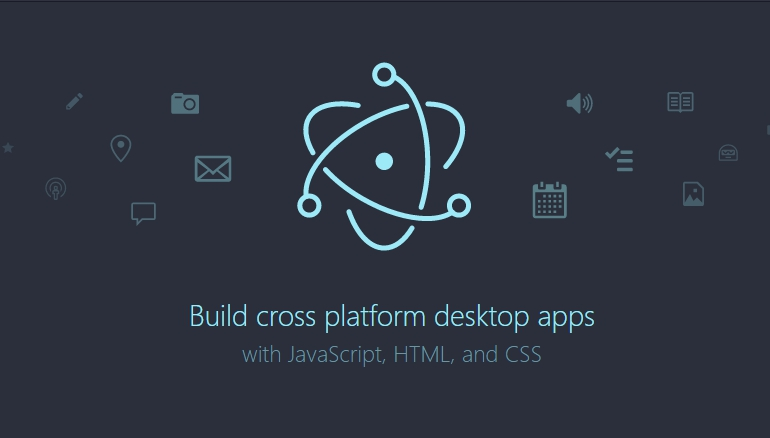

2015 год выдался богатым на нововведения, связанные с улучшениями веб-платформы. Аксель Рошмайер рассматривает 6 технологий, которые ему кажутся наиболее интересными:
- Electron
- React Native
- Прогрессивные веб-приложения
- Visual Studio Code
- Rollup
- WebAssembly

1.Electron
Electron – технология, разработанная GitHub. Она позволяет строить кроссплатформенные десктопные приложения с использованием веб-технологий. Среди её фич:
- автоматические обновления;
- отчеты об ошибках;
- установщики Windows;
- отладка и профилирование;
- нативное меню и уведомления;
Технология была изначально создана для GitHub-редактора Atom, который на данный момент используют многие компании, включая Microsoft (в Visual Studio Code, о котором речь пойдет ниже), Slack и Docker.
Архитектура Electron включает как среду выполнения Node.js, так и встроенный браузер Chromium. Приложения, сделанные с помощью этой технологии, выполняются несколькими процессами: главный процесс запускает скрипт из файла package.json. Этот скрипт может открывать окна для отображения пользовательского интерфейса. Аналогично вкладкам в веб-браузере каждое из окон выполняет отдельный процесс – рендеринг.

React Native
React Native позволяет разрабатывать нативные iOS- и Android-приложения при помощи React. Расположение виртуальной модели DOM осталось неизменным, и вам всё еще нужно использовать JSX для её создания. Но теперь UI собирается с помощью нативных компонентов, например UITabBar для iOS и Drawer для Android. Расположение этих компонентов настраивается с помощью Flexbox.
С одной стороны, это означает, что разные UI-слои есть у каждой из платформ: веб, iOS и Android. С другой – у вас будет возможность повторно использовать большую часть кода и получить опыт нативной разработки для каждой из платформ. Обычно я скептически отношусь к переносу языка с нативной платформы на другую. Но несколько месяцев назад, оценивая React Native, один iOS-разработчик заявил:
Возможно, я больше не буду писать iOS-приложение на Objective-C и Swif
Это примечательно, поскольку ему пришлось выучить и JavaScript, и React, прежде чем он смог продуктивно работать с React Native. Еще одно интересное высказывание принадлежит Энди Матушаку (Andy Matuschak), человеку из команды UIkit, который помогал разрабатывать iOS с версии 4.1 по 4.8:
Как автор UIkit, с уверенностью могу сказать: для UI-слоя React-модель намного лучше, чем модель UIkit. React Native – отличная штука
Прогрессивные веб-приложения
В чём-то нативные приложения уже догнали веб-приложения: примером тому служит применение индексации и технологий глубинного связывания. Прогрессивные приложения не столько технология, сколько обобщение характеристик современных веб-приложений. Это может означать, что в одних областях веб-приложения идут в ногу с нативными, в других – перегоняют их:
- Метод постепенного улучшения: приложение использует как можно больше окружений. Если необходим какой-либо сервис, приложение применяет то, что есть в наличии, или корректно прекращает работу, если ничего не найдено.
- Адаптивный пользовательский интерфейс: приложение подстраивается под различные способы ввода (касание, речь и т. д.) и вывода данных (разные размеры экрана, вибрация, аудио, брайлевские дисплеи).
- Независимость от соединения: приложение работает в режиме офлайн, когда соединение прерывается или вовсе отсутствует.
- UI, подогнанный под приложение: приложение перенимает UI-элементы нативных платформ, в том числе и быструю загрузку пользовательского интерфейса, который может быть заархивирован путем кэширования ассетов с помощью Service Worker.
- Постоянные обновления: Service Worker API определяет процесс для автоматического обновления приложений.
- Защищенное соединение: используется защищенный протокол передачи данных HTTPS для предотвращения слежки и атак.
- Обнаружение приложения: метаданные, такие как W3C-манифесты веб-приложения, позволяют поисковым системам находить веб-приложения.
- Взаимодействие push-уведомлений: они помогают пользователям быть в курсе событий.
- Нативная установка: на некоторые платформы можно установить веб-приложение, ничем не отличающееся от нативного (иконка на главном экране, отдельная позиция на панели многозадачности, UI браузера опционален).
- Залинкованность: возможность с легкостью расшаривать приложения по URL и запускать их без установки.
Я решил рассказать о прогрессивных веб-приложениях, потому что мне нравятся все вышеупомянутые техники и технологии, но я не до конца уверен, в чем именно состоит отличие между прогрессивными веб-приложениями и современными веб-приложениями. Единственное, что приходит в голову – это баннеры установки веб-приложений. Главная особенность в том, что этим приложениям вовсе не нужны баннеры.
Для дальнейшего чтения:
- Progressive Web Apps(сайт Google)
- Статья Эндрю Беттса (Andrew Betts)“Progressive apps” are a bag of carrots. Эндрю критично относится к прогрессивным веб-приложениям как к бренду и начинает статью с его анализа.

Visual Studio Code
Visual Studio Code - это редактор JavaScript-кода, нечто среднее между интегрированными средами разработки и текстовыми редакторами, который, по-моему, неплохо себя зарекомендовал. Его преимущество также в том, что он написан на JavaScript и основан на Electron. В 2015 году VSC получил статус открытого программного обеспечения и приобрел расширения.
WebAssembly
WebAssembly – это бинарный формат статического формального языка, производного от asm.js, который можно использовать для создания динамичных исполняемых программ, поддерживаемых JavaScript-движками. Формальный язык более высокоуровневый, чем байткод, поэтому его легче поддерживать. Выходные файлы существуют в рамках JavaScript и, как следствие, хорошо в него интегрируются. Принимая во внимание быстроту работы asm.js, скорость работы скомпилированного кода С++ в Web Assembly будет равняться примерно 70 % от скорости компиляции C++ в нативный код.
Вероятно, что в скором времени Web Assembly будет поддерживать JavaScript OOP и станет универсальной виртуальной машиной для веба.
| Игра | AMD TressFX | Tesselation | Translucence | Enlighten | HDR |
|---|---|---|---|---|---|
| ИТОГО: | Без поддержки 3 | +- | +- | ||
| Crysis | Не поддерживает | Поддерживает | Не поддерживает | ||
| Heavy Rain | Не поддерживает | Поддерживает | |||
| TES V: Skyrim | Поддерживает | Не поддерживает | |||